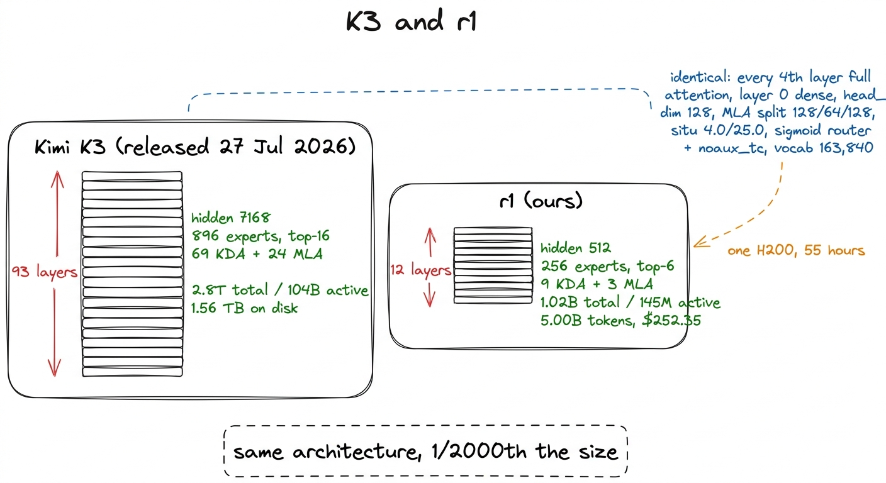
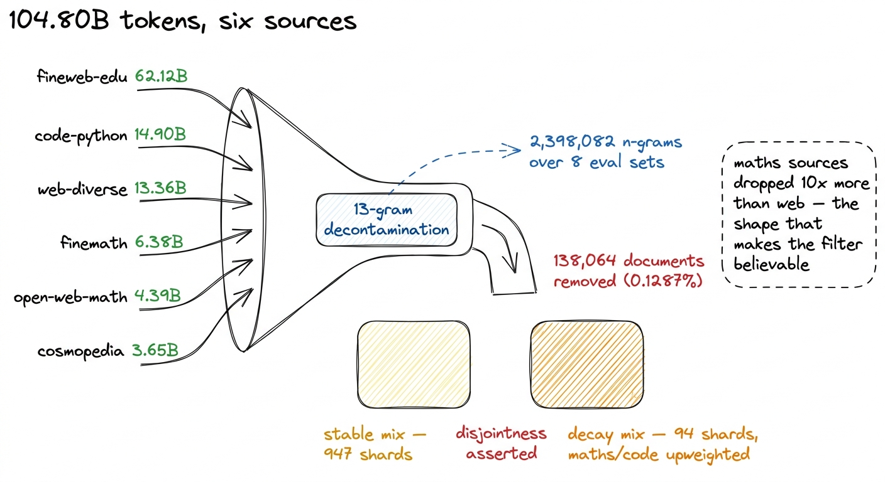
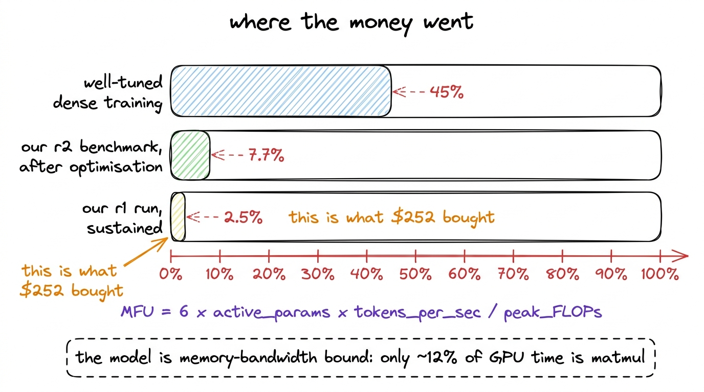
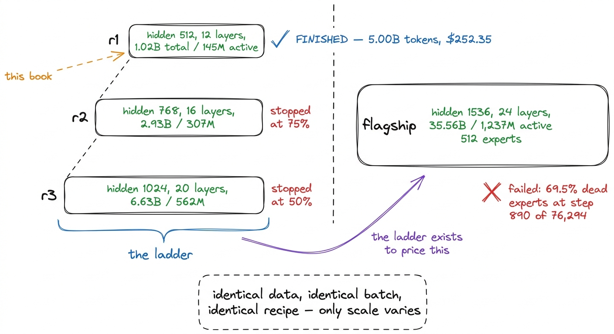
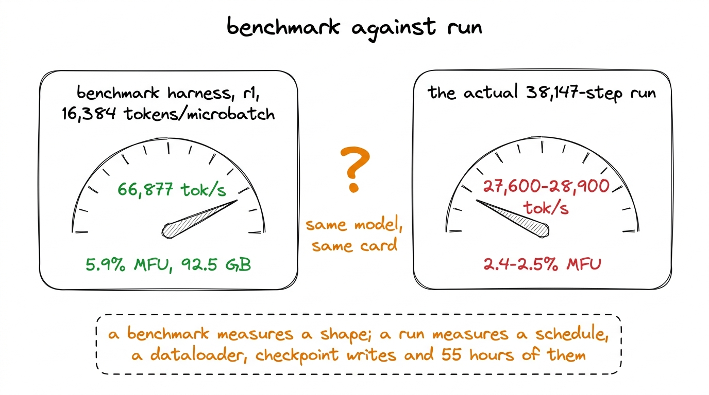
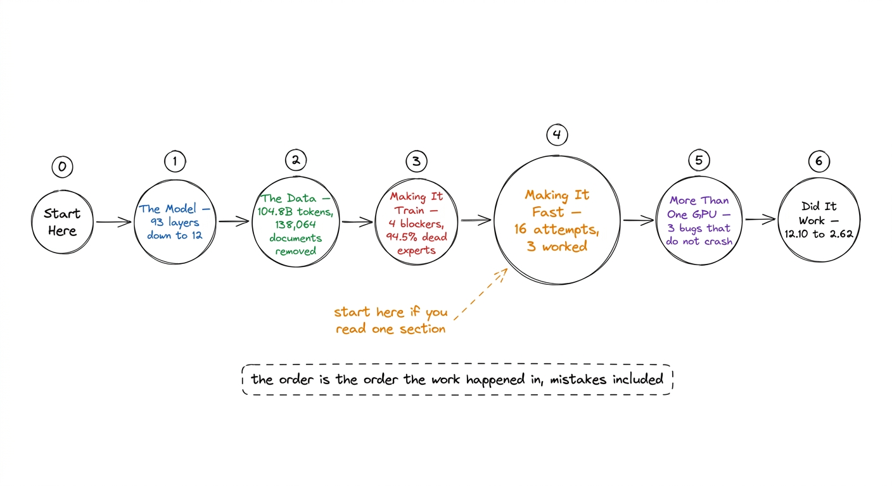

What we actually trained
A 1.02B-parameter Kimi K3 replica, 5.00 billion tokens, 38,147 steps on one H200, final loss 2.62 — the run in one pass, with the claims and their limits stated up front.
On 27 July 2026, Moonshot AI released Kimi K3: 2.8 trillion parameters, 104 billion of them active for any given token, shipped as 96 safetensors shards totalling 1.561 terabytes. Nine days later we finished pretraining a replica of it on one GPU for $252.35.
Those two sentences need immediate qualification, and the qualification is most of what this book is about.
Our model has 1.02 billion parameters, of which 145 million are active per token. It is roughly one two-thousandth of K3 by total size. It saw 5,000,003,584 tokens, which is a rounding error against the corpora frontier models are trained on. It has never been instruction-tuned, and it has only ever done one thing: predict the next token. What it does have is K3's architecture — the same attention stack in the same 3:1 ratio, the same mixture-of-experts routing with the same aux-loss-free balancer, the same activation function with the same two constants, and K3's own 163,840-token tokenizer, unmodified. When we say "a mini Kimi K3", that is the claim, and this book is the evidence for it.

figure rendering · The released model and our replica. The structure is preserved; the scThe run, in one table
Everything below is read from the run's own telemetry, not from a plan.
| model | 1.02B total, 145M active, 61M non-embedding |
| hardware | one H200, $4.54 per hour |
| tokens per step | 131,072 (4,096 sequence length × 4 × 8 accumulation) |
| steps | 38,147 |
| tokens | 5,000,003,584 |
| peak learning rate | 6.00e-4 |
| schedule | warmup–stable–decay, decay from step 32,430 |
| loss | 12.100 at step 0, 2.62 at the end |
| dead experts at the end | 0.0% |
| loss spikes skipped | 0 |
| cost | $252.35 |
The loss figures are worth reading twice. A model that has learned nothing assigns equal probability to every token in the vocabulary, and the cross-entropy of a uniform distribution over 163,840 tokens is ln(163,840) = 12.007. Our step-0 loss was 12.100. That agreement is not a result; it is a check that the model was initialised correctly and that the loss function is measuring what we think it is.1 The small excess over 12.007 comes from the model not being exactly uniform at initialisation — the embedding and output projections are tied, so the logits carry a little structure before any gradient has been applied. Every number after it is a result.
The corpus behind those tokens
Five billion tokens were drawn from a corpus of 104.80 billion, built across six sources and decontaminated before any of it was tokenized. That decontamination is the reason the evaluation chapter is allowed to quote a benchmark score at all.
A 13-gram index was built over the test splits of eight benchmarks — 2,398,082 unique n-grams — and every document in the corpus was checked against it. Any document sharing a single 13-gram with an eval set was dropped whole. Across 107,291,411 documents scanned, 138,064 were removed, a rate of 0.1287%.
The number that makes the filter believable is not the total but its distribution. The maths corpora dropped roughly ten times more than the web: finemath at 0.7239% and open-web-math at 0.6747%, against fineweb-edu at 0.0856%.2 That shape is what you should expect, because GSM8K and MMLU maths content circulates on maths sites. A filter that removed a uniform fraction of every source would have been evidence that it was matching noise rather than benchmarks, which is exactly what one benchmark in our suite turned out to do — the chapter on HumanEval is about that. The mix itself is split in two, general web through the stable phase and maths, code and reasoning upweighted through the decay, and the anneal switches at the same step the learning rate begins to fall.
The whole data pass cost about $17 of CPU time. It is the cheapest stage of the project and the one without which none of the rest would be worth reporting.

figure rendering · The corpus, its decontamination, and the two mixes the schedule switchWhat the money bought
$252.35 is roughly 55 hours of a single H200. Priced per token, that is about five cents per million training tokens, which is the sort of figure that makes the whole exercise look easy. It was not, and the reason is a number we will spend an entire section of this book on.
Model FLOPs Utilization, or MFU, is the fraction of a GPU's arithmetic capability that a training run actually uses. Our run sustained 2.4 to 2.5%. Well-tuned dense training reaches 40 to 55%. Put plainly, roughly 97% of the GPU we rented was doing something other than the arithmetic we were paying for.

figure rendering · Model FLOPs Utilization for our run against what well-tuned dense traiThat number was not accepted quietly. It was investigated across sixteen numbered attempts, of which three worked and thirteen did not, and the thirteen are written up in this book at the same length as the three.3 Most of that investigation was measured on r2, the rung above this one, because r2 was the largest model that fit comfortably on a single H200 at several batch sizes. Two attempts were measured elsewhere and are labelled where they appear: a size fit that spans all three rungs, and the dispatch fallback, which was found on the flagship. Attributing a measurement to the wrong model is the easiest mistake to make in a project with four of them, and one of our own attempts failed exactly that way. The investigation ended with a profile showing that only about 12% of GPU time was spent in matrix multiplication and 41.9% in elementwise operations that move data without computing much. A model in that state cannot be rescued by a bigger batch, more memory, or faster attention kernels, and we tried all three before we measured.
The three that worked are worth naming here, because they set the shape of that section. Batching the expert dispatch removed 3,840 sequential kernel launches per step and gave 17.5×. Fusing the situ activation into a single Triton kernel gave 1.38×, and did so by freeing 40 GB rather than by running faster. Deleting a silent fallback in that same dispatch gave 3.2× on the flagship. Every one of them came from a measurement rather than from reading the code, and every idea that came from reading the code failed.
What this book is, and what it is not
This is a worklog. It follows the order the work actually happened in, which means it includes the parts where the work was wrong.
There is a chapter about the four undocumented reasons Moonshot's released modeling code cannot be used for training at all, one of which fails non-deterministically — rung r2 trained normally while r1 returned NaN from step 0, from the same bug. There is a chapter about the load balancer, where 94.5% of experts stopped receiving tokens by step 20 while the metric we had chosen to detect exactly that condition read 0.99 out of 1.0. There is a chapter about a data manifest bug that would have trained the entire stable phase on a single maths corpus while reporting a healthy six-source mix. Each of these was caught. Each of them was caught by a measurement rather than by reading the code more carefully, and that pattern is the most transferable thing in the book.
What it is not is a from-scratch PyTorch tutorial for K3's components. That book already exists in this library and builds every module — Kimi Delta Attention, Gated MLA, Attention Residuals, LatentMoE — as small runnable code you can follow on a laptop.4 Build Kimi K3 from Scratch, in the same library. This book assumes those components exist and asks what happens when you try to train them for two days on real data. This book assumes the architecture and asks a different question: what does it take to actually run one, on real data, without wasting the money.
It is also not a claim to have matched K3. We report a 33.4% HellaSwag score against K3's 97.6% on GSM8K, which are not comparable numbers on comparable models, and the chapter on evaluation says so before it says anything else.
Where r1 sits
r1 is the first rung of a three-rung scaling ladder. The point of a ladder is to fix hyperparameters and measure throughput on small models before committing money to a large one, which is what labs do and what distinguishes this from picking a learning rate and hoping.

figure rendering · The three-rung ladder and the flagship it was built to price. Only theThe four models were all trained on the same data, at the same 131,072 tokens per step, on the same recipe, so that differences between them are differences of scale and nothing else. Of the four, only r1 finished. r2 and r3 were stopped at 75% and 50% of their token budgets when the compute account was disabled. The flagship — the 35.56-billion-parameter model the entire ladder was built to price — was launched, collapsed with 69.5% of its experts receiving no tokens, and stalled at step 890 of 76,294 having spent $48.33.
We say this here, in the opening chapter, because a book that describes a ladder and quietly declines to mention that two of its three rungs are unfinished, and that the model they were measuring for never trained, would be a different kind of document. The engineering in this book was built for all four models. The completed run it reports is one.
That has one consequence worth setting expectations about now. A scaling ladder produces a fit: three losses at three sizes on identical data, extrapolated to predict the fourth. We never got that fit, because two of the three rungs stopped mid-run and a partial loss is not a point on a curve. What survives from the ladder is narrower and still useful — it fixed the learning rate, it measured throughput so a budget could be priced from data rather than from hope, and it caught an initialisation bug that returned NaN on one rung and trained normally on another. Those are the things a ladder buys before it buys a scaling law, and they are why building one is worth it even when it does not finish.
The two claims we will defend
First: this is architecturally a Kimi K3, not a generic small transformer with K3's name attached. The check that makes this claim measurable is the fraction of a token's compute that flows through routed experts. In K3, 46.1% of active parameters are routed experts. An early version of our design preserved the total-to-active ratio and scored 7.5%, which is a dense model with a small mixture of experts bolted on, and it would have told us nothing about how routing and load balancing behave in the real thing. Fixing that changed the expert count, the expert width and the number of KDA heads, and it is the subject of the chapter on scaling down.
Second: every number in this book is measured, and the ones that are not are labelled. The flagship's 12.5% MFU is an extrapolation from two points, and appears as one. The peer comparisons against SmolLM2 and Qwen3 were planned and never run, so they do not appear at all. The r1 throughput measured in our benchmark harness was 66,877 tokens per second, and the throughput the actual run sustained was 27,600 to 28,900 — both figures are reported, in that order, because the gap between a benchmark and a run is itself a finding.

figure rendering · Our own benchmark and our own run disagree by a factor of two on the sHow the rest of the book runs
The order is the order the work happened in. The Model covers K3's released configuration and the arithmetic of shrinking it, including the finding that a "40 million active parameter" model is impossible when the vocabulary alone costs 83.9 million parameters at that width. The Data covers 104.80 billion tokens across six sources, decontaminated against eight benchmark test sets before tokenization, and the report that makes the evaluation numbers defensible. Making It Train covers the four blockers in the released code, the training loop, the router collapse, and checkpointing that survives losing the GPU mid-run. Making It Fast is the MFU investigation. More Than One GPU covers sharding and three distributed bugs that produce a finished run that is quietly wrong. Did It Work is the loss curve, twenty-four benchmark evaluations taken across the run rather than at the end, and the ledger.
If you read one section, read Making It Fast. If you read one chapter, read the profile, because it is the chapter where six plausible hypotheses die to a single measurement, and because the habit it teaches — measure the thing before optimising it — is worth more than any specific number in this book.

figure rendering · The structure of the book.One number to carry forward
Of everything measured across two weeks of this project, the number that changed the most decisions is this one: only about 12% of GPU time was spent on matrix multiplication.
Before that profile existed, six separate optimisation ideas had been formed by reading the code and reasoning about it. Every one of them was about making the arithmetic cheaper or fitting more work into memory. All six failed, and they failed for the same reason, which no amount of further reading would have revealed: the arithmetic was never the cost. The GPU was spending its time moving data.
The profile took one run to produce. It should have been the first thing we did.